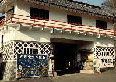
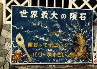
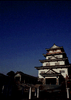
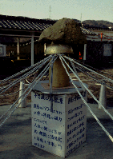
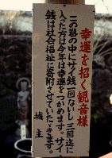
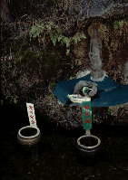
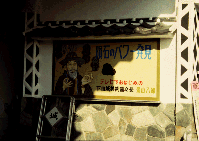

下田城/静岡県下田市
 
20数年前にTV東京でやっていたあのテレビコマーシャルを憶えておいでの方はいるだろうか。
お城の前にいきなりド−ン！と立て看板が建ち「下田城はお売りできません」、続いてナレーション「でも、その技術はお売りできます」というCM。
これは下田にある某建設会社のものなのだが、これを視ていた当時幼かった私にとってなぜか強烈なインパクトがあって、今でもよく憶えているのだが、その建設会社が作った下田城が何やらトンデモない事になっているという噂を聞き付け伊豆半島に向かった。
下田の市街地から車で5分とかからないこの下田城、かつての売り文句とは裏腹に何度か人手に渡っており、現在の「城主」のものになったのが数年前、それ以来この城は隕石パワーを信仰するトンデモ系の牙城となってしまったのである。
 
城の追手門の看板にはいきなり隕石パワー賛歌が全開。そしてその門を潜り、（後で考えると内容の割りには）決して安くない入場料を払うとダラーンと澱んだ空気が立ち昇るビザ−ルな空間がひろがっている。
城の前の広場には金ペイントされた「自称」隕石が鎮座しており隕石パワーについての熱いウンチクが語られている。
ちなみに私、隕石パワーとかUFO呼ぶのとかそーゆーのあんまり興味ないんでウンチク全然読んでません。だからそっち方面の方、隕石パワーについての質問とかしてこないように。ついでに私は寺は好きだけど宗教とか教義とかそーゆーのにも一切興味がありません。関心は常に「信仰の形態」に向いているので。それもとびっきり「珍」な形態に。
閑話休題。
池の中の的当て賽銭箱で小銭を散財させた後、いよいよ城の内部へと向かう。
 
城の中は地上5階、地下1階となっておりまずは1階から順に上へと登っていく。
この下田城もちろん訪れる人など稀で、私が訪れた日も貸し切り状態になっており、係りのオバチャンにマンツーマンで案内されたので撮影禁止である館内の写真が撮れませんでした。城内の内容は1階が下田名物唐人お吉の供養の為のお吉大観音、10メ−トル位。2階がお吉の生涯を説明した電動パノラマ人形館。その上は延々と古物と古美術品が並ぶダレた展示室。で、一応最上階は展望室になっている。城内のあまりの気の抜けた展示に飛び下りたくなるのを堪え、オバチャンに導かれるまま今度は地下の特別展示室へ。
そこは五色の紐やチープな飾りでデコレーションされたサイケな空間だった。一番奥に鎮座しているのはデカい隕石。ここの御本尊らしい。係りのオバチャンの話によると時価数千億円とのこと。眉に唾を塗っとこう。
ゴミのように床の上にゴロンと転がっている隕石の方でも数百億円すると言い張っている。
気になるのは城主（ま、教祖さんですな）が宇宙と交信するときに着る宇宙着。そのワードロープといったら全品ギラギラ。美川憲一も真っ青のマッドウェアーっす。
聞こうと聞くまいとオバチャンの説明は延々と続く。ここの城主さんは元古物屋さんで、この隕石を手にしてから商売が上向きになり巨万の富を得たという話から、オバチャン自身も小さな隕石を手に入れてから宝くじ10万円が当たったという話、さらに親戚の誰某が隕石を持ってからどーのこーのという話がぶっこわれたレコードのように続く。
そろそろお暇しようかなあ、と思っているとオバチャンすかさず「おにいちゃん、隕石ひとつ買ってきな、絶対幸せになれるから」だって。いらんわい。

1998.7
珍寺大道場 HOME